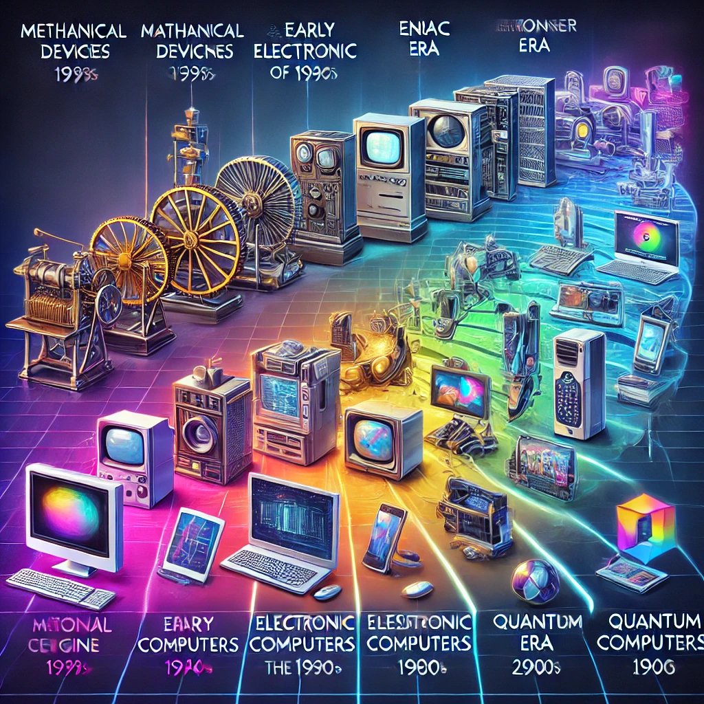

Tarihte Dijitalleşme
Dijitalleşme, insanlık tarihini etkileyen en büyük dönüşümlerden biridir. Teknolojinin hızla gelişmesi, hem bireylerin yaşam tarzlarını hem de toplumların işleyişini kökten değiştirmiştir.
Dijitalleşmenin Tarihi Dönemleri
- Mekanik Dönem: İlk hesap makineleri ve mekanik bilgisayarlar, dijitalleşmenin başlangıcıdır. Charles Babbage’ın Analitik Motoru örnek verilebilir.
- Elektronik Dönem: 1940'larda ENIAC gibi elektronik bilgisayarların geliştirilmesiyle dijitalleşme hızlanmıştır.
- Kişisel Bilgisayar Dönemi: 1980'lerde kişisel bilgisayarların yaygınlaşmasıyla bireyler dijital dünyaya erişmiştir.
- İnternet ve Mobil Teknoloji Dönemi: 1990'larda internet, 2000'lerde mobil cihazlar dijitalleşmeyi küresel ölçekte hızlandırmıştır.
- Endüstri 4.0 ve Yapay Zeka Çağı: Günümüzde IoT, yapay zeka ve büyük veri gibi teknolojiler bu dönemi temsil etmektedir.
Dijitalleşmenin Görsel Tarihi

Yukarıdaki görsel, dijitalleşmenin farklı dönemlerini ve teknolojik gelişimlerini göstermektedir.